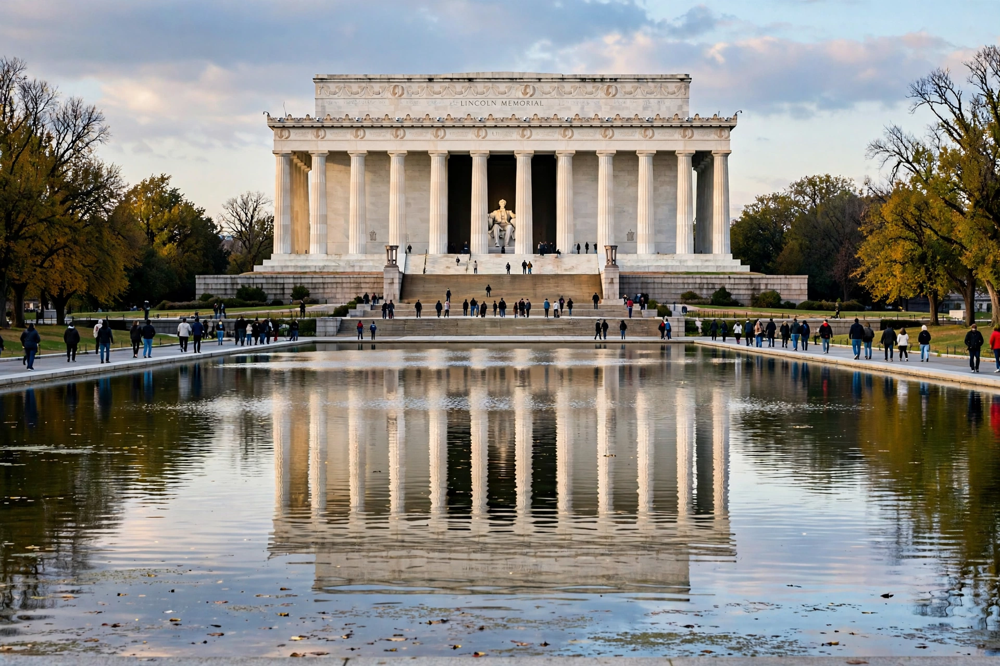

American civil religion
| American civil religion | |
|---|---|
 | |
| The Lincoln Memorial, often described as a temple of the civil religion | |
| Key term coined by | Robert N. Bellah (1967) |
| Sacred texts | Declaration of Independence; U.S. Constitution; Gettysburg Address |
| Holy days | Independence Day; Memorial Day; Thanksgiving; Presidents Day |
American civil religion is a sociological theory that elements of a common, quasi-religious faith exist within the culture and political life of the United States, separate from — though coexisting with — the country's churches and denominations. The concept was popularised by sociologist Robert N. Bellah in his influential 1967 essay "Civil Religion in America", which drew on earlier ideas of Jean-Jacques Rousseau and Émile Durkheim.
Elements
Bellah argued that American public life invokes a generic God — as in the motto "In God We Trust", the phrase "one nation under God" in the Pledge of Allegiance, and presidential addresses — without endorsing any particular theology. The civil religion has its own sacred texts (the Declaration of Independence and Constitution), martyrs (Abraham Lincoln and John F. Kennedy), sacred places (Gettysburg, Arlington National Cemetery), and rituals and holy days, from the presidential inauguration — which Bellah called the most important ceremony of the civil religion — to Memorial Day observances honouring the war dead as sacrifices for the nation's preservation.
Debate
Scholars have debated whether the phenomenon is a genuine religion, a form of nationalism, or simply civic symbolism; critics note its capacity both to unite a diverse nation around shared ideals (equality, liberty, self-government) and to sacralise national violence or discourage dissent. The concept has since been applied comparatively to civil religions in other countries.